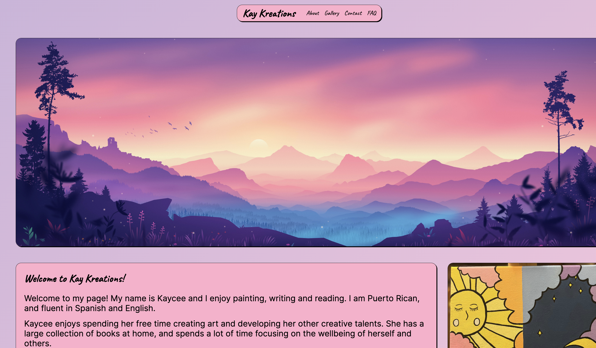

Peer Review 1
Review - Shultz, Ryan

Link to page.
1 - Complete
2 - None of the files, folders, scripts, and images contain spaces or upper-case letters.
3 - Design
a. Page does have sufficient font-size/contrast so it's easy to read.
b. Page has site colors and font using standard .css files.
c. CRAP
i. Contrast - Great contrast, you choose really nice color skems and this allows for users to understand the message.
ii. Repetition - Nice use of repetition to reuse sections and formats. I love the use of images followed by sections of text.
iii. Alignment - Really nice alignment! I love the spacing between the edges and sections.
iv. Proximity - Nice use of proximity to enhance the user experience. Nice use of proximity to keep item near each other. Like text near images.
4 - Page has within it
a. Nav/Header - Nice nav/header, fits the website.
b. Main - Main section is a great intro to site.
c. Footer - Nice footer, fits the website.
5 - Nav/Header uses nice styling to create a header that includes a navbar. This header contains a consistent styles is in each page.
6 - Main section starts with a h2 that includes name of site and following that includes the content of the site in sections. The first section being the hero section.
7 - Does not have a brand tagline.
8 - Page has a footer with:
Home - Go to the home page.
Instagram - Go to the instagram.
cshultz - Go to the cshultzcorp page.
9 - Page has met requirement for this assignment
What else I noticed - I really love the aesthetic. However, I think you should extend the contact page to include a form for inquiries and include css and html validation. Overall, I think the site looks amazing! Great job!